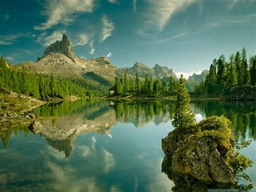
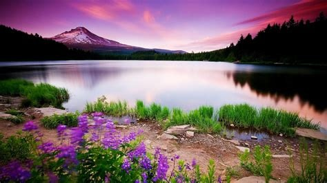
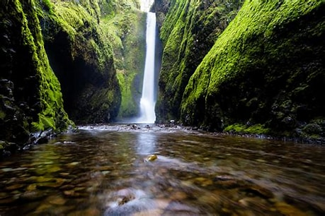
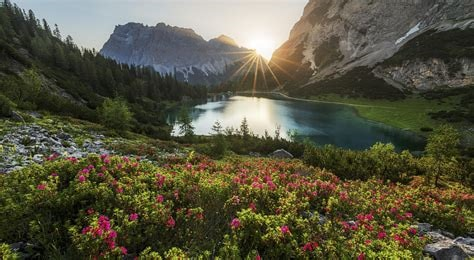
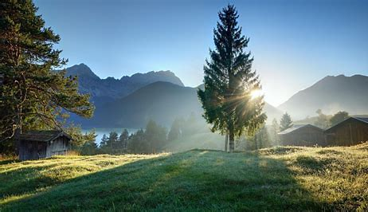
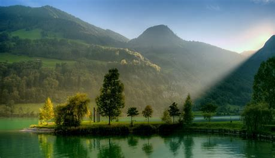
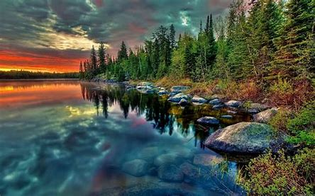

Embracing the serenity of nature's embrace
Where every leaf tells a story and every breeze sings a melody

Exploring the symphony of nature's silence

In the heart of nature, every color finds its perfect harmony

In the heart of the forest, where water meets wonder

Witnessing the poetry of earth in every sunrise and sunset

Sunshine mixed with a little hurricane of leaves

Exploring the symphony of nature's silence

Nature's cathedral, where the trees are the pillars and the sky is the dome

Chasing sunsets, capturing moments of eternal beauty